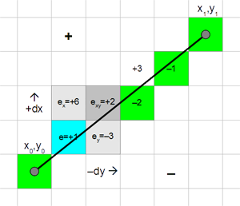
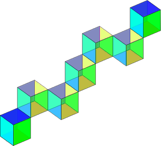
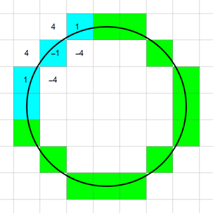
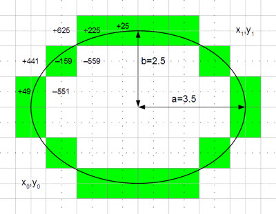
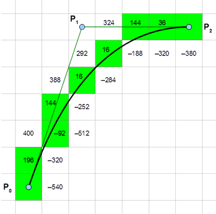
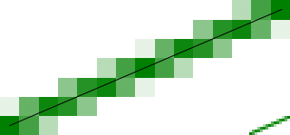
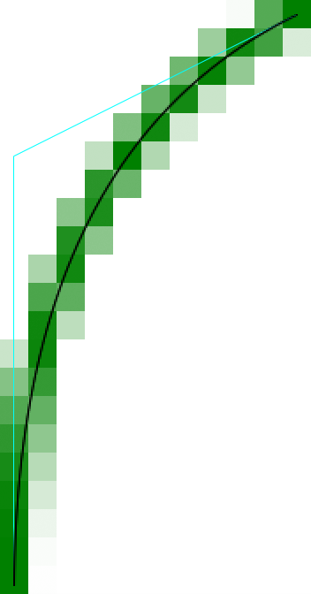
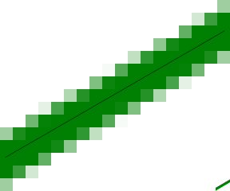

, last update August 2016.
, last update August 2016.A simple implementation to plot lines, circles, ellipses and Bézier curves.
This page introduces a compact and efficient implementation of Bresenham's algorithm to plot lines, circles, ellipses and Bézier curves.
A detailed documentation of the algorithm and more program examples are availble in PDF: Bresenham.pdf.
Some C-program examples of the document are listed below.
You can try the Bresenham algorithm online on this scratchpad.
The source code of the samples is also available in C: bresenham.c
LineA simple example of Bresenham's line algorithm. void plotLine(int x0, int y0, int x1, int y1) { int dx = abs(x1-x0), sx = x0<x1 ? 1 : -1; int dy = -abs(y1-y0), sy = y0<y1 ? 1 : -1; int err = dx+dy, e2; /* error value e_xy */ for(;;){ /* loop */ setPixel(x0,y0); if (x0==x1 && y0==y1) break; e2 = 2*err; if (e2 >= dy) { err += dy; x0 += sx; } /* e_xy+e_x > 0 */ if (e2 <= dx) { err += dx; y0 += sy; } /* e_xy+e_y < 0 */ } } |  |
Bresenham in 3DThe algorithm could be extended to three (or more) dimensions. void plotLine3d(int x0, int y0, int z0, int x1, int y1, int z1) { int dx = abs(x1-x0), sx = x0<x1 ? 1 : -1; int dy = abs(y1-y0), sy = y0<y1 ? 1 : -1; int dz = abs(z1-z0), sz = z0<z1 ? 1 : -1; int dm = max(dx,dy,dz), i = dm; /* maximum difference */ x1 = y1 = z1 = dm/2; /* error offset */ for(;;) { /* loop */ setPixel(x0,y0,z0); if (i-- == 0) break; x1 -= dx; if (x1 < 0) { x1 += dm; x0 += sx; } y1 -= dy; if (y1 < 0) { y1 += dm; y0 += sy; } z1 -= dz; if (z1 < 0) { z1 += dm; z0 += sz; } } } |  |
CircleThis is an implementation of the circle algorithm. void plotCircle(int xm, int ym, int r) { int x = -r, y = 0, err = 2-2*r; /* II. Quadrant */ do { setPixel(xm-x, ym+y); /* I. Quadrant */ setPixel(xm-y, ym-x); /* II. Quadrant */ setPixel(xm+x, ym-y); /* III. Quadrant */ setPixel(xm+y, ym+x); /* IV. Quadrant */ r = err; if (r <= y) err += ++y*2+1; /* e_xy+e_y < 0 */ if (r > x || err > y) err += ++x*2+1; /* e_xy+e_x > 0 or no 2nd y-step */ } while (x < 0); } |  |
EllipseThis program example plots an ellipse inside a specified rectangle. void plotEllipseRect(int x0, int y0, int x1, int y1) { int a = abs(x1-x0), b = abs(y1-y0), b1 = b&1; /* values of diameter */ long dx = 4*(1-a)*b*b, dy = 4*(b1+1)*a*a; /* error increment */ long err = dx+dy+b1*a*a, e2; /* error of 1.step */ if (x0 > x1) { x0 = x1; x1 += a; } /* if called with swapped points */ if (y0 > y1) y0 = y1; /* .. exchange them */ y0 += (b+1)/2; y1 = y0-b1; /* starting pixel */ a *= 8*a; b1 = 8*b*b; do { setPixel(x1, y0); /* I. Quadrant */ setPixel(x0, y0); /* II. Quadrant */ setPixel(x0, y1); /* III. Quadrant */ setPixel(x1, y1); /* IV. Quadrant */ e2 = 2*err; if (e2 <= dy) { y0++; y1--; err += dy += a; } /* y step */ if (e2 >= dx || 2*err > dy) { x0++; x1--; err += dx += b1; } /* x step */ } while (x0 <= x1); while (y0-y1 < b) { /* too early stop of flat ellipses a=1 */ setPixel(x0-1, y0); /* -> finish tip of ellipse */ setPixel(x1+1, y0++); setPixel(x0-1, y1); setPixel(x1+1, y1--); } } |  |
Bézier curveThis program example plots a quadratic Bézier curve limited to gradients without sign change. | |
void plotQuadBezierSeg(int x0, int y0, int x1, int y1, int x2, int y2) { int sx = x2-x1, sy = y2-y1; long xx = x0-x1, yy = y0-y1, xy; /* relative values for checks */ double dx, dy, err, cur = xx*sy-yy*sx; /* curvature */ assert(xx*sx <= 0 && yy*sy <= 0); /* sign of gradient must not change */ if (sx*(long)sx+sy*(long)sy > xx*xx+yy*yy) { /* begin with longer part */ x2 = x0; x0 = sx+x1; y2 = y0; y0 = sy+y1; cur = -cur; /* swap P0 P2 */ } if (cur != 0) { /* no straight line */ xx += sx; xx *= sx = x0 < x2 ? 1 : -1; /* x step direction */ yy += sy; yy *= sy = y0 < y2 ? 1 : -1; /* y step direction */ xy = 2*xx*yy; xx *= xx; yy *= yy; /* differences 2nd degree */ if (cur*sx*sy < 0) { /* negated curvature? */ xx = -xx; yy = -yy; xy = -xy; cur = -cur; } dx = 4.0*sy*cur*(x1-x0)+xx-xy; /* differences 1st degree */ dy = 4.0*sx*cur*(y0-y1)+yy-xy; xx += xx; yy += yy; err = dx+dy+xy; /* error 1st step */ do { setPixel(x0,y0); /* plot curve */ if (x0 == x2 && y0 == y2) return; /* last pixel -> curve finished */ y1 = 2*err < dx; /* save value for test of y step */ if (2*err > dy) { x0 += sx; dx -= xy; err += dy += yy; } /* x step */ if ( y1 ) { y0 += sy; dy -= xy; err += dx += xx; } /* y step */ } while (dy < dx ); /* gradient negates -> algorithm fails */ } plotLine(x0,y0, x2,y2); /* plot remaining part to end */ } |  |
Anti-aliased lineThe algorithm could be modified to draw an anti-aliased line. void plotLineAA(int x0, int y0, int x1, int y1) { int dx = abs(x1-x0), sx = x0<x1 ? 1 : -1; int dy = abs(y1-y0), sy = y0<y1 ? 1 : -1; int err = dx-dy, e2, x2; /* error value e_xy */ int ed = dx+dy == 0 ? 1 : sqrt((float)dx*dx+(float)dy*dy); for ( ; ; ){ /* pixel loop */ setPixelAA(x0,y0, 255*abs(err-dx+dy)/ed); e2 = err; x2 = x0; if (2*e2 >= -dx) { /* x step */ if (x0 == x1) break; if (e2+dy < ed) setPixelAA(x0,y0+sy, 255*(e2+dy)/ed); err -= dy; x0 += sx; } if (2*e2 <= dy) { /* y step */ if (y0 == y1) break; if (dx-e2 < ed) setPixelAA(x2+sx,y0, 255*(dx-e2)/ed); err += dx; y0 += sy; } } } |  |
Anit-aliased quadratic Bézier curveThis program example draws a segment of an anti-alised quadratic Bézier curve. void plotQuadBezierSegAA(int x0, int y0, int x1, int y1, int x2, int y2) { int sx = x2-x1, sy = y2-y1; long xx = x0-x1, yy = y0-y1, xy; /* relative values for checks */ double dx, dy, err, ed, cur = xx*sy-yy*sx; /* curvature */ assert(xx*sx >= 0 && yy*sy >= 0); /* sign of gradient must not change */ if (sx*(long)sx+sy*(long)sy > xx*xx+yy*yy) { /* begin with longer part */ x2 = x0; x0 = sx+x1; y2 = y0; y0 = sy+y1; cur = -cur; /* swap P0 P2 */ } if (cur != 0) { /* no straight line */ xx += sx; xx *= sx = x0 < x2 ? 1 : -1; /* x step direction */ yy += sy; yy *= sy = y0 < y2 ? 1 : -1; /* y step direction */ xy = 2*xx*yy; xx *= xx; yy *= yy; /* differences 2nd degree */ if (cur*sx*sy < 0) { /* negated curvature? */ xx = -xx; yy = -yy; xy = -xy; cur = -cur; } dx = 4.0*sy*(x1-x0)*cur+xx-xy; /* differences 1st degree */ dy = 4.0*sx*(y0-y1)*cur+yy-xy; xx += xx; yy += yy; err = dx+dy+xy; /* error 1st step */ do { cur = fmin(dx+xy,-xy-dy); ed = fmax(dx+xy,-xy-dy); /* approximate error distance */ ed = 255/(ed+2*ed*cur*cur/(4.*ed*ed+cur*cur)); setPixelAA(x0,y0, ed*fabs(err-dx-dy-xy)); /* plot curve */ if (x0 == x2 && y0 == y2) return;/* last pixel -> curve finished */ x1 = x0; cur = dx-err; y1 = 2*err+dy < 0; if (2*err+dx > 0) { /* x step */ if (err-dy < ed) setPixelAA(x0,y0+sy, ed*fabs(err-dy)); x0 += sx; dx -= xy; err += dy += yy; } if (y1) { /* y step */ if (cur < ed) setPixelAA(x1+sx,y0, ed*fabs(cur)); y0 += sy; dy -= xy; err += dx += xx; } } while (dy < dx); /* gradient negates -> close curves */ } plotLineAA(x0,y0, x2,y2); /* plot remaining needle to end */ } |  |
Anti-aliased thick lineThis algorithm draws an anti-aliased line of wd pixel width. void plotLineWidth((int x0, int y0, int x1, int y1, float wd) { int dx = abs(x1-x0), sx = x0 < x1 ? 1 : -1; int dy = abs(y1-y0), sy = y0 < y1 ? 1 : -1; int err = dx-dy, e2, x2, y2; /* error value e_xy */ float ed = dx+dy == 0 ? 1 : sqrt((float)dx*dx+(float)dy*dy); for (wd = (wd+1)/2; ; ) { /* pixel loop */ setPixelColor(x0,y0,max(0,255*(abs(err-dx+dy)/ed-wd+1))); e2 = err; x2 = x0; if (2*e2 >= -dx) { /* x step */ for (e2 += dy, y2 = y0; e2 < ed*wd && (y1 != y2 || dx > dy); e2 += dx) setPixelColor(x0, y2 += sy, max(0,255*(abs(e2)/ed-wd+1))); if (x0 == x1) break; e2 = err; err -= dy; x0 += sx; } if (2*e2 <= dy) { /* y step */ for (e2 = dx-e2; e2 < ed*wd && (x1 != x2 || dx < dy); e2 += dy) setPixelColor(x2 += sx, y0, max(0,255*(abs(e2)/ed-wd+1))); if (y0 == y1) break; err += dx; y0 += sy; } } } |  |
| This algorithm plots lines, circles, ellipses, Bézier curves and more Draws complex curves nearly as fast as lines. Short and compact implementation. No approximation of the curve. Apply anti-aliasing to any curve. Adjustable line thickness. |
The principle of the algorithm could be used to rasterize any curve.
Copyright © Alois Zingl, Vienna, Austria, Email: , last update August 2016.